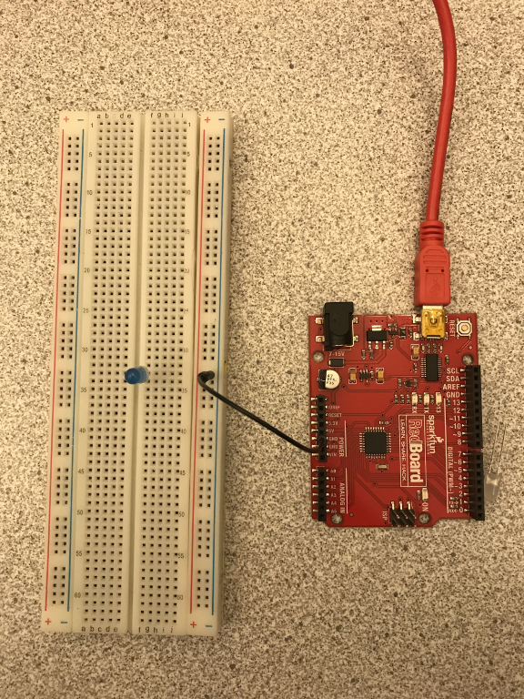
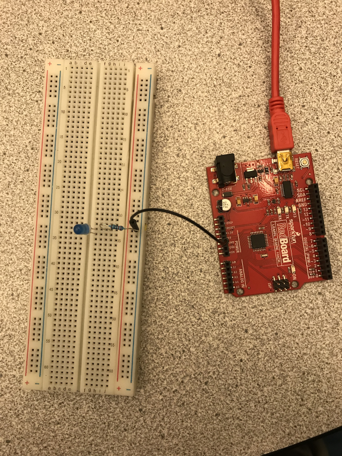
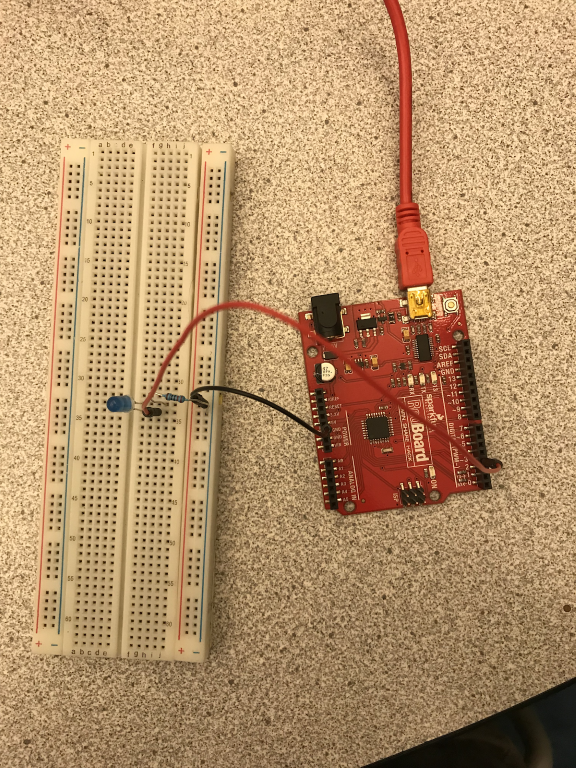
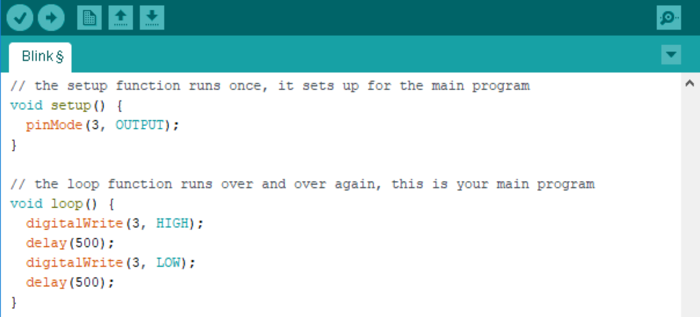

Arduino Interactive Lesson 1: Blink an LED
Activity 1: The Basic Circuit
In this activity, you will construct a circuit with the Arduino that will turn on an LED.
Materials Needed:


Steps (see image below):
- Put the LED on the breadboard, with the legs in different rows (see picture). Remember which end of the LED is the longer side.
- Attach one end of the 330 Ohm resistor in the same row as the longer end of the LED, put the other end in a different row. (IMPORTANT: The resistor prevents the LED from getting too much voltage, if it is not used the LED will break and no longer work).
- Attach one end of the red wire to 5V and the other end to the row with the resistor.
- Complete the circuit, attach the black wire to the ground pin (GND) on the Arduino, and to the row with the short wire from the LED. Plug the Arduino into the computer.
Trace the circuit with your finger, starting at the 5V pin. Notice how the electricity travels through each component and ends back at the Arduino, creating a circle. If the circle (circuit) is broken anywhere, the LED will turn off.
Activity 2: The Basic Blink Code
In this activity, you will connect an LED to the Arduino and make it blink. You can always connect an LED to the Arduino in the same way as described below (just change the wire from pin 3 to whichever pin you want the LED to be in).
Supplies needed:
Circuit
- Connect one end of the wire to the GND pin and the other end to the blue ‘-’ column on the breadboard. 
- Attach one end of the 330 Ohm resistor in the same row as the longer end of the LED, put the other end in a different row. (IMPORTANT: The resistor prevents the LED from getting too much voltage, if it is not used the LED will break and no longer work).
- Attach one end of the red wire to 5V and the other end to the row with the resistor. 
- Complete the circuit, attach the black wire to the ground pin (GND) on the Arduino, and to the row with the short wire from the LED. Plug the Arduino into the computer. 


Code
To enter the code, open the Arduino IDE or another Arduino code editor. Before you do anything, in the selection bar at the top left, scroll over “Tools > Board” then click “Arduino Genuino Uno”. Next, scroll over “Tools > Ports” Then select the port that has “Arduino Genuino Uno” in parentheses. Next, enter the code and click “upload”. It should be the arrow pointing to the right.
// the setup function runs once, it sets up for the main program
void setup(){
pinMode(3, OUTPUT);
}
// the loop function runs over and over again, this is your main program
digitalWrite(3,HIGH);
delay (500);
digitalWrite(3,LOW);
delay (500);
}
This is what it looks like on the computer screen:
Exploring the Code
- Change the number in “delay” from 500 to 1000 and reupload the code. What happens?
- How long does it take for the light to turn off after it turns on? Count out 15 blinks, how much time passed (use a stopwatch, or the second hand of a clock). How much time passes during delay(1000)?
- Replace ‘LOW’ with ‘HIGH’ in the second digitalWrite function in the void loop section. What happens? Why do you think this happens?
- Change the OUTPUT in the pinMode function to INPUT. What happened to the LED? Why do you think this is?
- Once you know what each line does, leave a comment next to each line of code explaining it (inside the code editor). To leave a comment, write ‘//’ before typing. If you have questions about what each function does, ask your MESA advisor or mentor.
Now let’s add another light. Follow steps 1-4 on page 2 and 3 again in a different spot on the breadboard. This time, in step 4, connect the wire to pin 5 instead of pin 3. Look at the code below, how does the wiring change? What pins are wires connected to?
Code
void setup(){
pinMode(3, OUTPUT);
}
digitalWrite(3,HIGH);
digitalWrite(5,LOW);
delay (500);
digitalWrite(5,HIGH);
digitalWrite(3,LOW);
delay (500);
}
Exploring the Code
- Why is the light different for pin 3 and for pin 5? What is the problem with the code? What needs to be added to the setup?
- Fix the code and see what happens with the light.
Challenges:
- Figure out how to wire and code a stoplight with red, green, and yellow LEDs (if you don’t have yellow, you can use a blue LED in its place). Remember that you will need 3 OUTPUTs.
- Have fun making multiple lights blink! Can you make the blink to the beat of one of the songs you like?